Lenguajes Formales de Consulta
Escrito por Adrián Quiroga Linares.
4.1 Introducción
Para realizar una implementación operativa del modelo relacional es necesario que exista un lenguaje que permita crear, modificar y eliminar las tablas del esquema relacional de la BD y, una vez creadas las tabls, poder añadir tuplas con la información adecuada y obtener información a partir de los datos almacenados.
Los lenguajes de consulta pueden clasificarse en procedimentales o no procedimentales, y tienen 5 operaciones básicas (selección, proyección, producto cartesiano, unión de conjuntos y diferencia de conjuntos) a partir de las cuales se puede hacer cualquier otra operación a realizar.
- Los lenguajes procedimentales: en ellos el usuario indica al sistema que lleve a cabo una serie de operaciones en la base de datos para calcular el resultado deseado.
- Los lenguajes no procedimentales: en ellos el usuario describe la información deseada sin establecer un procedimiento concreto para obtener esa información.
4.2 Álgebra Relacional
El álgebra relacional es un lenguaje de consulta procedimental que permite operar sobre relaciones (tablas) en bases de datos relacionales. Define un conjunto de operaciones que, operando sobre tablas, devuelve tablas.
Las operaciones pueden ser unarias (operan sobre una única tabla) o binarias (operan sobre 2 tablas).
Operación Selección (σ)
Filtra tuplas que satisfacen una condición (unaria).
Selección ->
Operación Proyección (Π)
Determina qué atributos visualizar y cuáles se eliminan de los resultados (unaria).
Proyección ->
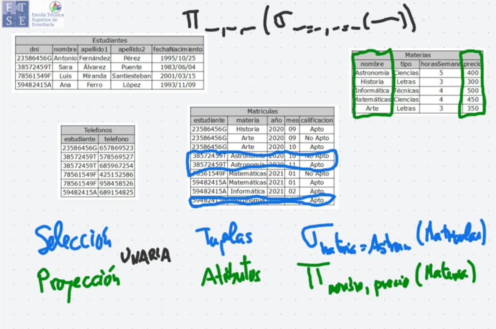
Composición de operaciones
Las operaciones relacionales se pueden componer para realizar consultas más complejas. Por ejemplo, si queremos obtener los nombres de todos los profesores del departamento de Física:
Operación Unión (∪)
La unión combina todas las tuplas de dos relaciones compatibles, eliminando duplicados. Para que dos relaciones sean compatibles, deben tener el mismo número de atributos y los mismos dominios (tipos de datos).
Operación Diferencia de Conjuntos (−)
La diferencia de conjuntos devuelve las tuplas que están en la primera relación pero no en la segunda.
Intersección de conjuntos (∩) (Inner Join)
La intersección devuelve las tuplas que están presentes tanto en una tabla como en otra.
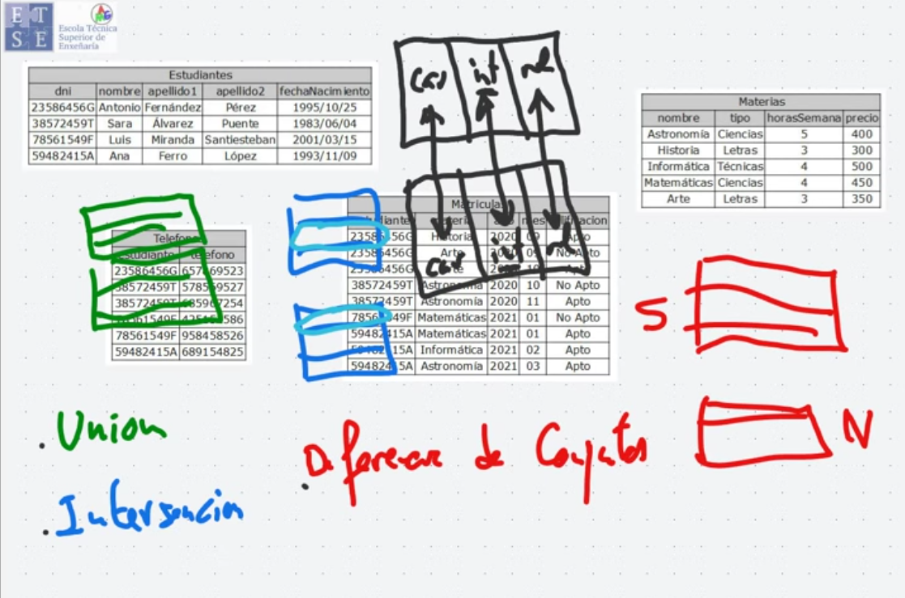
Reunión Externa
La reunión externa es una variación de la reunión natural que preserva las tuplas de una o ambas tablas, incluso si no encuentran coincidencias. Rellena los valores faltantes con NULL.
Existen tres tipos de reuniones externas:
- Reunión externa por la izquierda (⟕): preserva todas las tuplas de la relación izquierda.
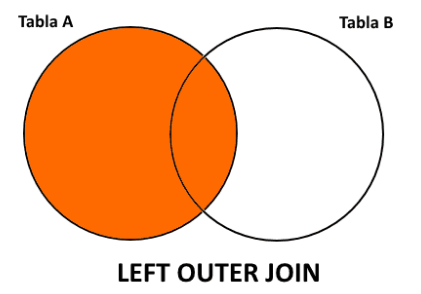
- Reunión externa por la derecha (⟖): preserva todas las tuplas de la relación derecha.
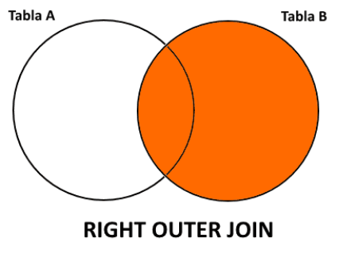
- Reunión externa completa (⟗): preserva todas las tuplas de ambas relaciones. Equivalente a la union más la intersección
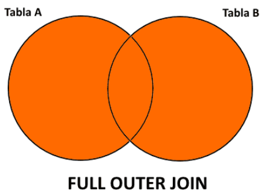
## Producto Cartesiano (×) Comprime información procedente de dos relaciones y crea una relación cuyo nº de atributos es la suma de atributos de las 2 relaciones combinadas y su nº de tuplas es el producto de las tuplas de ambas relaciones (*binaria*).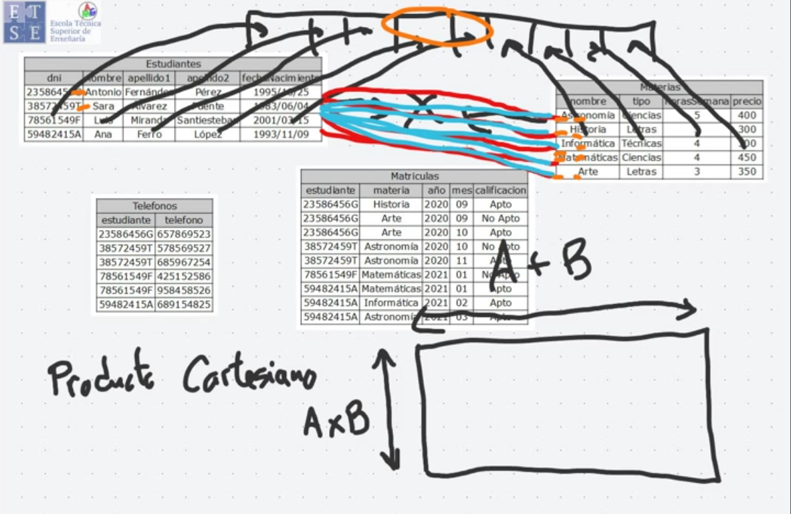
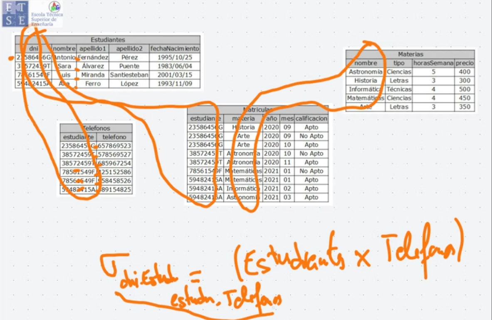
Reunión Natural (⋈)
La reunión natural (natural join) combina dos relaciones pero solo conserva las tuplas donde los valores de los atributos comunes coinciden. Es como un producto cartesiano seguido de una selección y proyección para mantener solo las coincidencias en los atributos comunes.
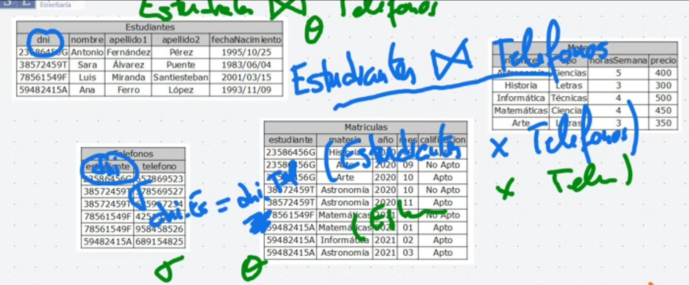
Reunión Zeta (⋈_θ)
La reunión zeta (o theta join) es una operación similar a la reunión natural, pero permite especificar una condición arbitraria entre las tuplas, no necesariamente de igualdad en los atributos comunes.
Supongamos que queremos combinar Profesor y Curso en función de una condición arbitraria, por ejemplo, que el departamento de Profesor contenga la palabra "Informática". Esto se expresa como:
Operación Renombramiento
El renombramiento se utiliza para cambiar los nombres de las relaciones o atributos, lo cual es útil para evitar ambigüedades en operaciones como el producto cartesiano. Se denota con la letra griega ρ.
- Ejemplo: Si queremos renombrar la relación
profesorcomoP:
Asignación (←)
La asignación permite almacenar temporalmente el resultado de una consulta en una variable, lo cual es útil para reutilizar ese resultado en operaciones posteriores.
Ejemplo: Supongamos que queremos obtener el producto cartesiano de Profesor y Enseña y luego hacer una selección sobre el resultado.
-
Asignamos el producto cartesiano a una variable:
-
Ahora, hacemos una selección sobre temp1 para encontrar las coincidencias en ID:
-
Por último, podemos proyectar solo los nombres y cursos:
Este mecanismo ayuda a descomponer consultas complejas en pasos más simples y organizados.
4.3 Operaciones del Álgebra Relacional Extendida
Proyección Generalizada
La proyección generalizada es una extensión de la proyección simple. En la proyección tradicional, se seleccionan columnas de una tabla sin aplicar transformaciones o cálculos sobre los datos. Sin embargo, la proyección generalizada permite incluir operaciones aritméticas o de manipulación de cadenas en los atributos seleccionados. Esto es útil para generar nuevos valores a partir de los datos existentes.
Agregación
La operación de agregación permite aplicar funciones como suma, promedio, conteo, mínimo y máximo a conjuntos de valores. Estas funciones devuelven un único valor a partir de una colección de valores, y son útiles cuando se necesitan realizar cálculos estadísticos sobre los datos.
-
Suma
: Devuelve la suma de los valores. - Ejemplo:
- Ejemplo:
-
Promedio
: Devuelve la media de los valores. - Ejemplo:
- Ejemplo:
-
Conteo
: Devuelve el número de elementos en la colección. - Ejemplo:
- Ejemplo:
-
Mínimo
: Devuelve el valor mínimo. - Ejemplo:
- Ejemplo:
-
Máximo
: Devuelve el valor máximo. - Ejemplo:
- Ejemplo:
Resumen
- Proyección generalizada: permite realizar cálculos o concatenaciones sobre las columnas de una relación, como en el ejemplo de dividir el sueldo anual por 12 para obtener el sueldo mensual.
- Agregación: permite aplicar funciones como
sum,avg,count,min, ymaxpara resumir datos en una relación. También permite agrupar los datos por ciertos atributos antes de aplicar la función de agregación, como calcular el promedio por departamento.
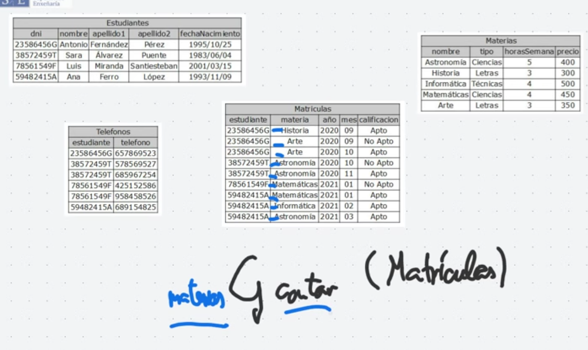
4.5 Cálculo Relacional de Tuplas
El cálculo relacional de tuplas es un lenguaje de consultas no procedimental** que describe la información deseada sin especificar un procedimiento concreto para obtenerla. Las consultas se expresan como:
{t|P(t)}
Esto representa el conjunto de todas las tuplas t tales que el predicado P es cierto para t.
{t | t ∈ profesor ∧ t[sueldo] > 80000}
El cálculo relacional de tuplas es equivalente en potencia expresiva al álgebra relacional básico (sin operaciones relacionales extendidas). Esto significa que todas las expresiones del álgebra relacional pueden representarse en el cálculo relacional de tuplas y viceversa.
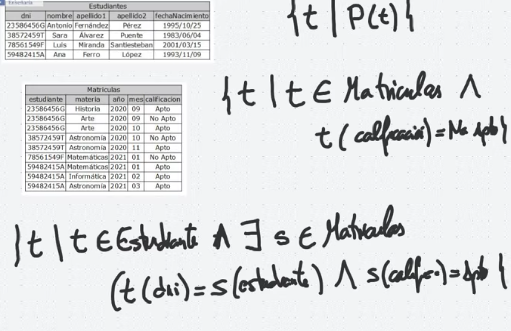
4.6 Cálculo Relacional de Dominios
Lenguaje no procedimental.
Una segunda forma de cálculo relacional, denominada cálculo relacional de dominios, usa variables de dominio, que toman sus valores del dominio de un atributo, en vez de hacerlo para una tupla completa. El cálculo relacional de dominios, no obstante, se halla estrechamente relacionado con el cálculo relacional de tuplas. El cálculo relacional de dominios sirve de base teórica al ampliamente utilizado lenguaje QBE (véase Apéndice C.1 en red), al igual que el álgebra relacional sirve como base para el lenguaje SQL.
Las expresiones del cálculo relacional de dominios son de la forma:
donde
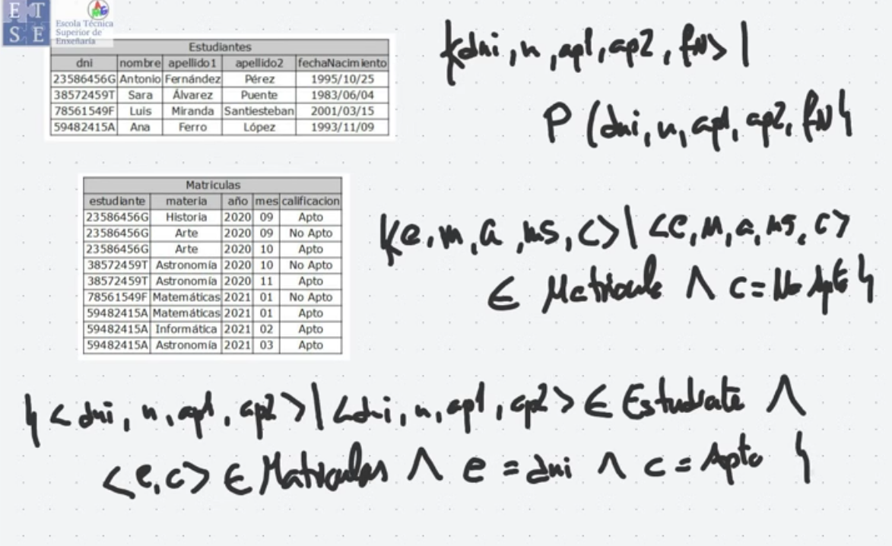
Un lenguaje que puede usarse para producir cualquier relación se denomina relacionalmente completo. Los tres explicados en este tema son relacionalmente completos.